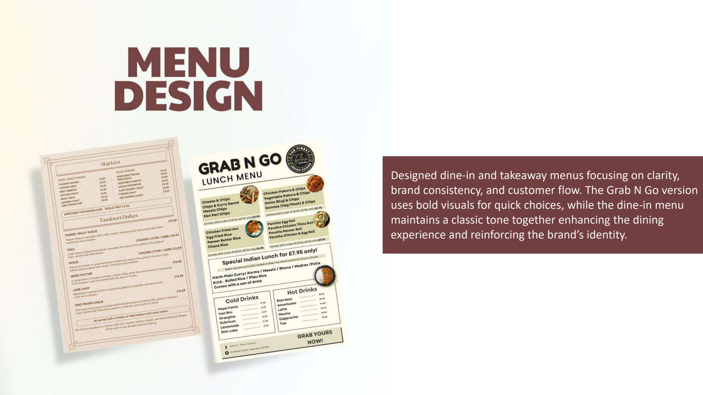
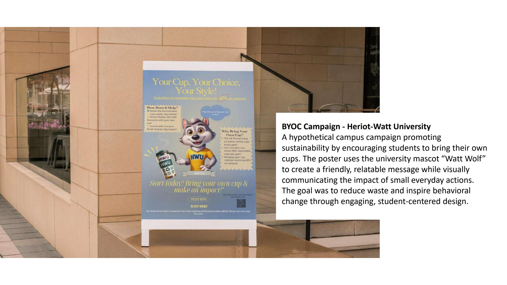
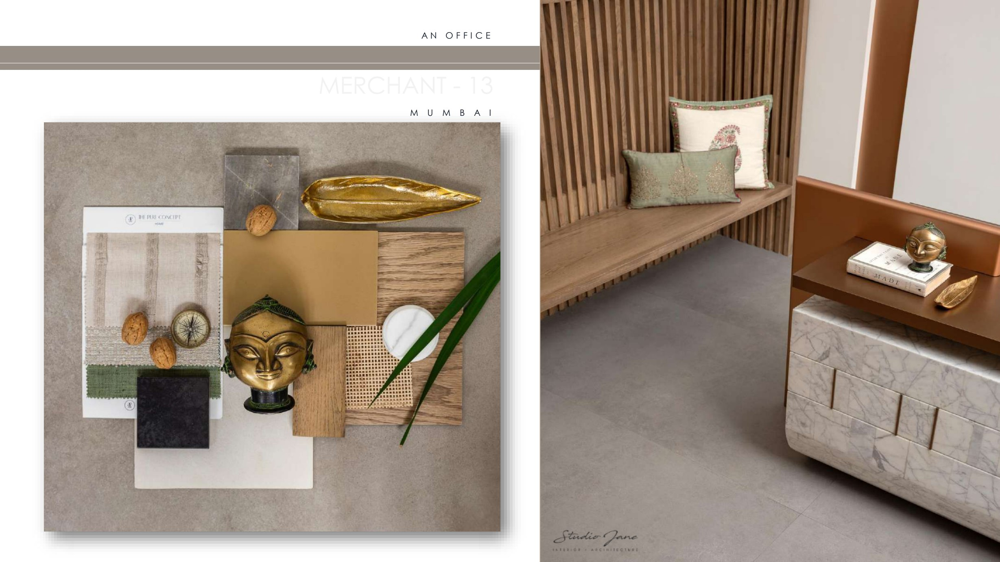

Selected Work
Work
Brand storytelling, campaign strategy and creative direction — commercial and purpose-led briefs, plus the spatial design foundation the practice is built on.
Creative Portfolio (PDF) ↓
01
Brand & Creative
Case Studies

More creative work



02
Design Foundation · 2020–2023
Spatial & Interior Design
The projects that shaped how I think about narrative, material and visual identity — parametric studies, public surfaces, retail interiors and acoustics.